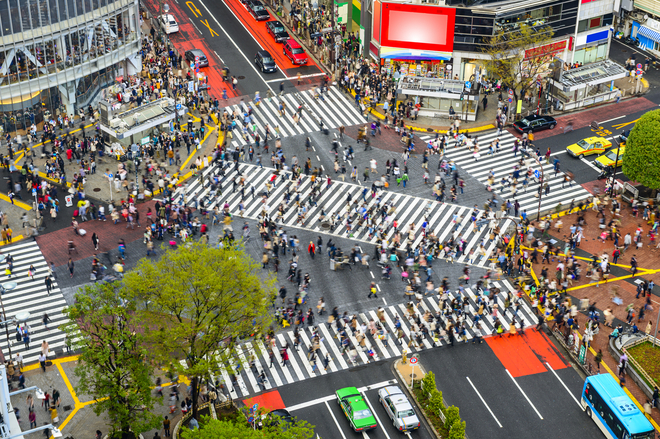

30 самых интересных фактов о Японии
1) Японцы очень уважают тех, кто может сказать на их языке хоть две фразы. Они считают, что выучить его нереально.
2) Самые сильные ругательства в японском языке типа "дурак" и "идиот".
3) По-японски "дурак" звучит как "бака" (дословно глупый человек). А иностранец - как "гайдзин" (дословно - чужак). "Бака-гайдзин" в японском разговорном - это американец.
4) Японцы постоянно говорят о еде, а когда они едят, то обсуждают, как им нравится угощение. Поужинать, не произнеся несколько раз oishii (вкусно) - очень невежливо.
5) В Японии едят дельфинов. Из них делают суп, готовят кусияки (японский шашлык), даже едят сырым. У дельфина довольно вкусное мясо, с ярковыраженным вкусом, и совершенно непохожее на рыбу.
6) Наверное, правильным питанием можно объяснить тот факт, что здесь очень редко увидишь японку с лишним весом.
7) В Японии самый медленный в мире МакДоналдс.
8) В Японии категорически не приняты чаевые. Считается, что пока клиент платит за услугу назначенную цену, он остаётся с продавцом на равных.
9) В Японии очень честные люди. Если вы потеряли кошелек в метро, 90% вероятности, что его сдадут в бюро находок.
10) Во время землетрясений в Японии не бывает мародерства. Почему – смотрите пункт 9.
11) Японские полицейские – самые честные в мире, взяток не берут. Разве что иногда за незначительные нарушения можно уболтать отпустить, прикинувшись "бакой".
12) Если вас поймали за что-то серьезное, то имеют право держать в СИЗО 30 суток, не пуская адвоката.
13) Токио - самый безопасный мегаполис в мире. В Токио настолько безопасно, что шестилетние дети самостоятельно пользуются общественным транспортом.
14) В Японии специфическое отношение к порнографии. Раньше практически в каждой японской гостинице работал канал с "клубничкой".
15) В каждом продуктовом магазине на стойке с прессой обязательно есть полочка с хентаем. В больших книжных магазинах под порнографию отводят целые этажи.
16) Возраст согласия в Японии - 13 лет. Это означает, что с обозначенного возраста добровольный секс не считается изнасилованием.
17) В Токио, в районе Шинджуку-Ни-Чеме, самая большая концентрация гей-баров в мире.
18) Японцы и алкоголь - понятия слабосовместимые. Большинство из них даже после одной стопки крепкого алкоголя начинают жутко краснеть. Но есть и исключения – любого украинца перепьют.
19) Японцы очень стеснительные, не привыкшие выражать свои чувства. Для многих настоящий подвиг сказать: "Я тебя люблю".
20) Треть свадеб в стране - результат организованных родителями сватовства и смотрин.
21) В японских семьях абсолютно нормальная ситуация, когда брат с сестрой вообще не разговаривают, даже не знают номеров мобильных телефонов друг друга.
22) Японцы народ очень чистоплотный, но, сколько бы ни было членов в семье, ванну все принимают, не меняя воду. Правда, перед этим каждый принимает душ.
23) Японцы практически никогда не зовут гостей домой. Приглашение "заходите как-нибудь" в большинстве случаев стоит воспринимать исключительно как вежливый оборот речи.
24) Японцы – сумасшедшие трудоголики. Могут запросто работать 15-18 часов в день без перерыва на обед.
25) Приходить на работу вовремя в Японии считается дурным тоном. На месте надо быть хотя бы на полчаса раньше.
26) В японском языке даже есть слово "кароши", что буквально переводится, как "смерть от переутруждения". В среднем каждый год с этим диагнозом умирает десять тысяч человек.
27) У японцев очень низкие пенсии. Максимальная социальная выплата бедствующим старикам составляет где-то 300 долларов. Предполагается, что каждый японец сам должен позаботиться о своей старости.
28) В северных городах Японии все тротуары с подогревом, поэтому здесь никогда не бывает гололеда.
29) В Японии на улицах можно увидеть вазы с зонтиками. Если начинается дождь, можете взять любой, а потом, когда дождь заканчивается, ставите в ближайшую вазу.
30) На японских улицах вы не увидите мусорных баков. Весь мусор японцы несут домой, а потом сортируют на четыре вида: стекло, сжигаемый, перерабатываемый и несжигаемый мусор.